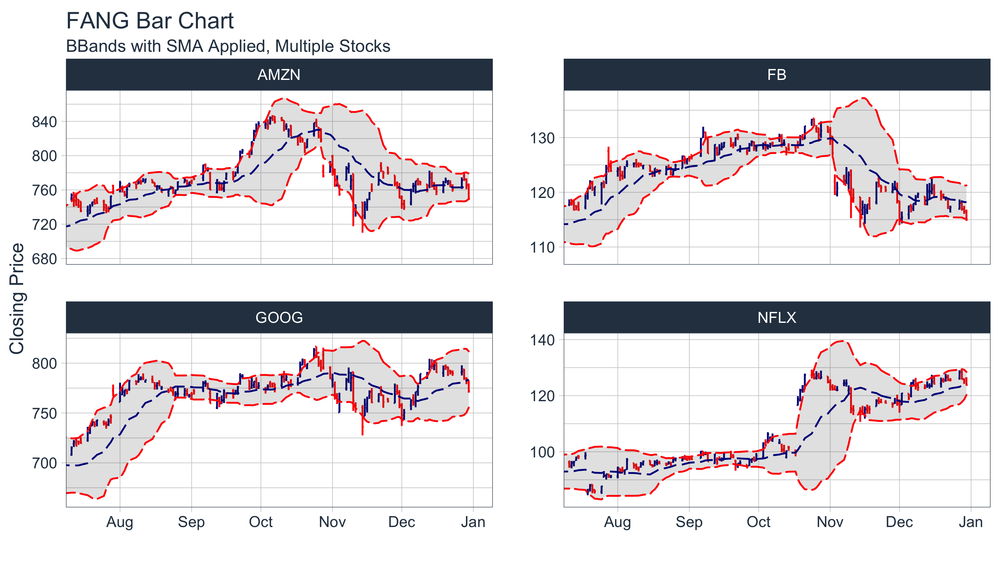

Introduction to tidyquant
Matt Dancho
2020-06-30
Source:vignettes/TQ00-introduction-to-tidyquant.Rmd
TQ00-introduction-to-tidyquant.Rmd2-Minutes To Tidyquant
Our short introduction to tidyquant on YouTube.

Check out our entire Software Intro Series on YouTube!
Benefits
- A few core functions with a lot of power
- Integrates the quantitative analysis functionality of
zoo,xts,quantmod,TTR, andPerformanceAnalytics - Designed for modeling and scaling analyses using the the
tidyversetools in R for Data Science - Implements
ggplot2functionality for beautiful and meaningful financial visualizations - User-friendly documentation to get you up to speed quickly!
A Few Core Functions with A Lot of Power
Minimizing the number of functions reduces the learning curve. What we’ve done is group the core functions into four categories:
Get a Stock Index,
tq_index(), or a Stock Exchange,tq_exchange(): Returns the stock symbols and various attributes for every stock in an index or exchange. Eighteen indexes and three exchanges are available.Get Quantitative Data,
tq_get(): A one-stop shop to get data from various web-sources.Transmute,
tq_transmute(), and Mutate,tq_mutate(), Quantitative Data: Perform and scale financial calculations completely within thetidyverse. These workhorse functions integrate thexts,zoo,quantmod,TTR, andPerformanceAnalyticspackages.Performance analysis,
tq_performance(), and portfolio aggregation,tq_portfolio(): ThePerformanceAnalyticsintegration enables analyzing performance of assets and portfolios. Refer to Performance Analysis with tidyquant.
For more information, refer to the first topic-specific vignette, Core Functions in tidyquant.
Integrates the Quantitative Analysis Functionality of xts/zoo, quantmod TTR and Performance Analytics
There’s a wide range of useful quantitative analysis functions (QAF) that work with time-series objects. The problem is that many of these wonderful functions don’t work with data frames or the tidyverse workflow. That is until now. The tidyquant package integrates the most useful functions from the xts, zoo, quantmod, TTR, and PerformanceAnalytics packages, enabling seamless usage within the tidyverse workflow.
Refer below for information on the performance analysis and portfolio attribution with the PerformanceAnalytics integration.
For more information, refer to the second topic-specific vignette, R Quantitative Analysis Package Integrations in tidyquant.
Designed for the data science workflow of the tidyverse
The greatest benefit to tidyquant is the ability to easily model and scale your financial analysis. Scaling is the process of creating an analysis for one security and then extending it to multiple groups. This idea of scaling is incredibly useful to financial analysts because typically one wants to compare many securities to make informed decisions. Fortunately, the tidyquant package integrates with the tidyverse making scaling super simple!
All tidyquant functions return data in the tibble (tidy data frame) format, which allows for interaction within the tidyverse. This means we can:
- Seamlessly scale data retrieval and mutations
- Use the pipe (
%>%) for chaining operations - Use
dplyrandtidyr:select,filter,group_by,nest/unnest,spread/gather, etc - Use
purrr: mapping functions withmap
For more information, refer to the third topic-specific vignette, Scaling and Modeling with tidyquant.
Implements ggplot2 Functionality for Financial Visualizations
The tidyquant package includes charting tools to assist users in developing quick visualizations in ggplot2 using the grammar of graphics format and workflow.

For more information, refer to the fourth topic-specific vignette, Charting with tidyquant.
Performance Analysis of Asset and Portfolio Returns
Asset and portfolio performance analysis is a deep field with a wide range of theories and methods for analyzing risk versus reward. The PerformanceAnalytics package consolidates many of the most widely used performance metrics as functions that can be applied to stock or portfolio returns. tidquant implements the functionality with two primary functions:
-
tq_performanceimplements the performance analysis functions in a tidy way, enabling scaling analysis using the split, apply, combine framework. -
tq_portfolioprovides a useful toolset for aggregating a group of individual asset returns into one or many portfolios.
Performance is based on the statistical properties of returns, and as a result both functions use returns as opposed to stock prices.
For more information, refer to the fifth topic-specific vignette, Performance Analysis with tidyquant.